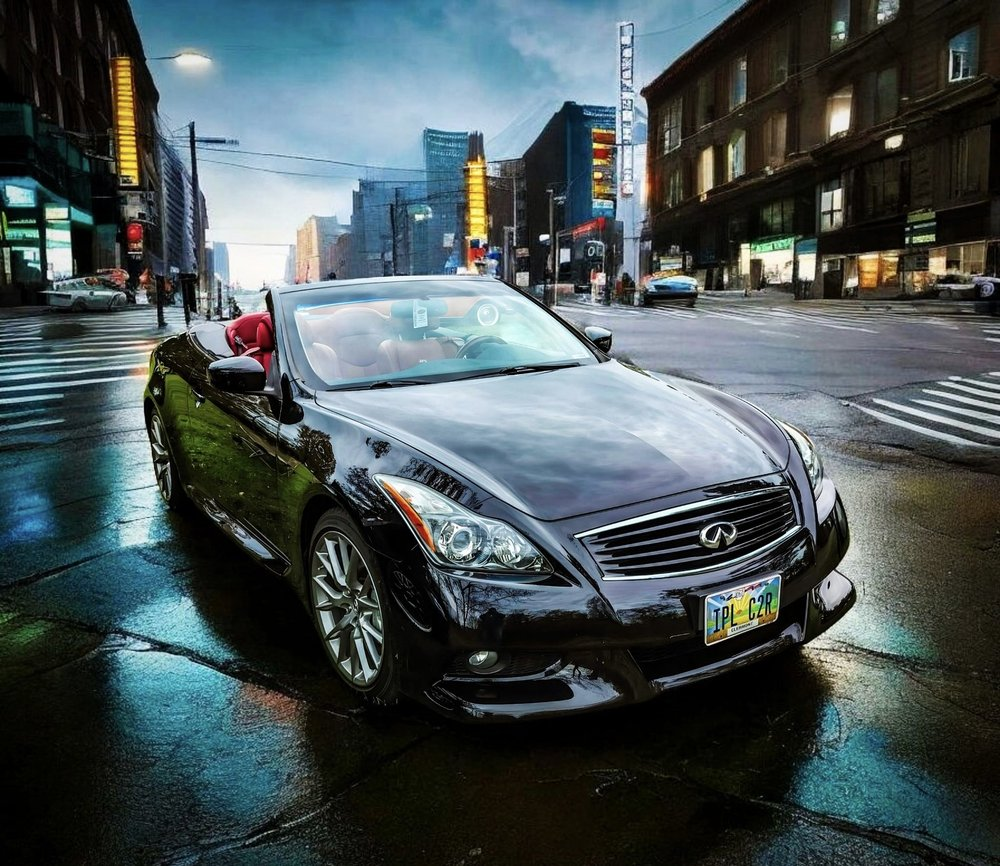

Most people retire and pick up golf. Mike Henderson spent 32 years becoming one of the world's leading experts in dry ice blasting and industrial cleaning technology — serving as Regional Sales Manager and technical expert at Cold Jet, a global dry ice blasting leader, across 52 industries and over 100 applications.
He began experimenting with dry ice technology on personal vehicles, and the results turned heads. That curiosity became Thermal Shock Labs: an auto detailing shop focused on high-end undercarriage and engine bay cleaning, treatment, and protective coatings, built on dry ice blasting and laser ablation technology.
Thermal Shock Labs isn't just another detail shop. It's where experience, innovation, and passion collide.